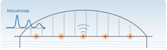
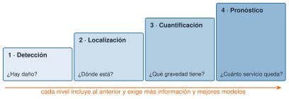
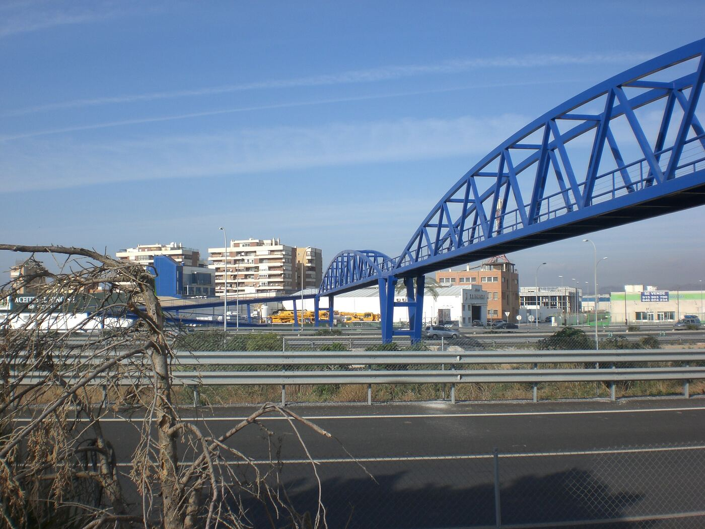
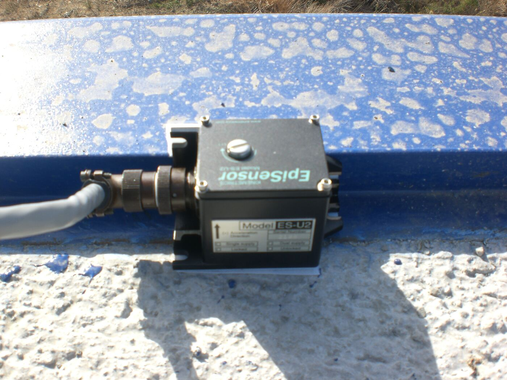
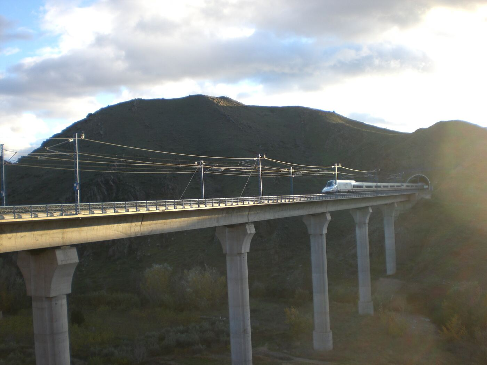
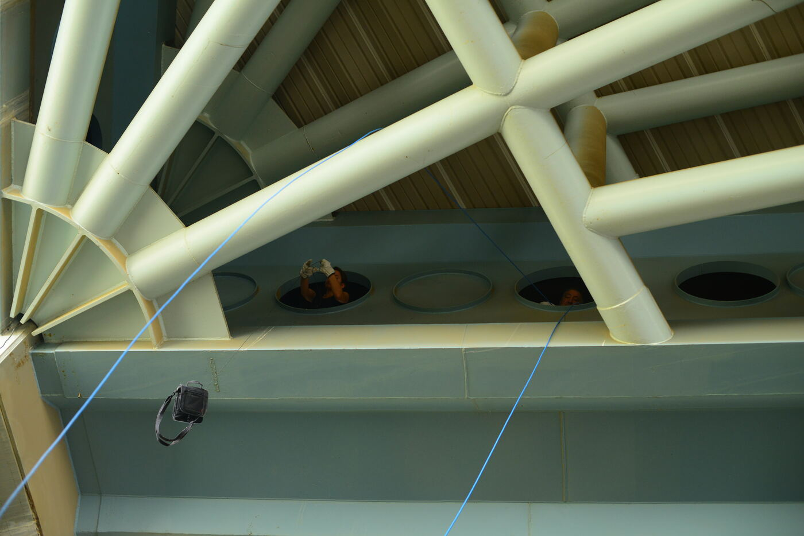

flowchart LR
A["1 · Evaluación operativa<br/>(qué dañaría y qué se mide)"] --> B["2 · Adquisición,<br/>normalización y limpieza<br/>(M3, M4, M8)"]
B --> C["3 · Extracción de indicadores<br/>(frecuencias, modos, amortiguamiento)<br/>(M5 a M7)"]
C --> D["4 · Modelo estadístico<br/>(línea base y umbral)"]
D --> E{"¿Se aparta de<br/>la línea base?"}
E -- "sí" --> F["Alarma e inspección"]
E -- "no" --> B
Introducción al SHM
M0 · Sesión S0

Objetivos y prerrequisitos
Objetivos. Al terminar la unidad sabrás:
- explicar qué es la monitorización de la salud estructural (structural health monitoring, SHM) y por qué compensa económicamente y en seguridad;
- distinguir los cuatro niveles de diagnóstico: detección, localización, cuantificación y pronóstico;
- describir el SHM como un proceso de reconocimiento de patrones, de la adquisición de datos a la decisión;
- elegir entre monitorización periódica o continua, y entre estática o dinámica, según el caso;
- reconocer estos conceptos en estructuras reales y rellenar una ficha de caso;
- orientarte por Resonancia: vías, itinerarios y cómo pedirle ayuda a Claude Code.
Prerrequisitos. C0 · Fluidez en IA y uso responsable. No se necesita programar: esta unidad es conceptual.
Temas de la unidad
- M0.1 Qué es la monitorización de la salud estructural; motivación económica y de seguridad
- M0.2 Niveles de diagnóstico: detección, localización, cuantificación y pronóstico
- M0.3 El SHM como reconocimiento de patrones: adquisición, indicadores, modelo estadístico y decisión
- M0.4 Monitorización periódica frente a continua, y estática frente a dinámica
- M0.5 Casos de referencia: puentes, edificios, aerogeneradores, colectores solares
- M0.6 Cómo usar Resonancia: vías, itinerarios y unidades con Claude Code
Teoría breve
M0.1 Qué es la monitorización de la salud estructural; motivación económica y de seguridad
Definición 1 Monitorización de la salud estructural (SHM). Proceso de poner en marcha una estrategia para identificar daño en estructuras aeroespaciales, civiles o mecánicas (Farrar y Worden 2007).
Definición 2 Daño. Cualquier cambio en el material, en la geometría, en las condiciones de contorno o en la conectividad de una estructura que perjudique su comportamiento.
Así, «daño» no significa solo grieta: una unión atornillada que se afloja y un apoyo que deja de deslizar son daños, aunque a simple vista no se vea nada.
Frente a la inspección visual periódica, el SHM mide la estructura mientras trabaja y compara lo medido con un estado de referencia. Tres motivos lo justifican:
- Seguridad. Hay daños que no se ven desde fuera, o que aparecen entre dos inspecciones. El colapso del puente Morandi, en Génova (2018), y el del viaducto de la A-6 en Lugo, de unos 25 años de antigüedad, recuerdan que las estructuras fallan. Ninguno de estos casos prueba por sí solo que el SHM los hubiera evitado, pero ilustran el problema que quiere atacar.
- Economía. Sustituir el mantenimiento por calendario por un mantenimiento según el estado real (condition-based maintenance) evita intervenciones innecesarias y detecta a tiempo las necesarias.
- Conocimiento. Los datos medidos permiten contrastar y ajustar los modelos de cálculo con la estructura real, no con la de los planos.
Conviene no confundir el SHM con el ensayo no destructivo local (ultrasonidos, campos magnéticos, inspección visual): estas técnicas necesitan saber dónde mirar, mientras que el enfoque global del SHM, basado en la respuesta de toda la estructura, sirve para decidir dónde conviene inspeccionar (Farrar y Worden 2007; Doebling et al. 1996).
Pon a prueba lo anterior.
El SHM sustituye por completo a la inspección visual.
Falso. Se complementan: el enfoque global del SHM no localiza por sí solo cada grieta, pero indica dónde conviene inspeccionar; y hay daños que la inspección visual no ve.
Marca todos los casos que se consideran «daño» en el sentido de SHM.
- Una grieta que se abre en una unión soldada.
- Una unión atornillada que se afloja sin que se vea.
- Un descenso de 10 °C de la temperatura ambiente.
- Un camión pesado que cruza el puente.
Las a y b: cambian material, geometría o conectividad y perjudican el comportamiento. La temperatura y el tráfico son condiciones ambientales y de operación que también mueven los indicadores, pero no son daño (M0.3).
M0.2 Niveles de diagnóstico: detección, localización, cuantificación y pronóstico
La clasificación clásica de Rytter (Rytter 1993), usada también en las revisiones de la literatura (Doebling et al. 1996), ordena el diagnóstico en cuatro niveles. Cada uno incluye a los anteriores y exige más información y mejores modelos:
| Nivel | Pregunta | Ejemplo en una pasarela metálica |
|---|---|---|
| 1. Detección | ¿Hay daño? | El primer modo baja de frecuencia respecto a la línea base. |
| 2. Localización | ¿Dónde está? | El cambio se concentra en un tercio del vano. |
| 3. Cuantificación | ¿Qué gravedad tiene? | Se estima una pérdida de rigidez en una unión. |
| 4. Pronóstico | ¿Cuánto tiempo de servicio queda? | Se proyecta la evolución del daño hasta un umbral de seguridad. |

Algunos autores intercalan un nivel de clasificación del tipo de daño entre la localización y la cuantificación. Lo importante es la lógica: detectar es relativamente fácil; pronosticar exige modelos físicos fiables y datos de la evolución del daño. Por eso gran parte de los sistemas reales se queda en el nivel 1 o 2, y Resonancia se centrará ahí antes de aspirar a más.
Doebling, Scott W., Charles R. Farrar, Michael B. Prime, y Daniel W. Shevitz. 1996. Damage Identification and Health Monitoring of Structural and Mechanical Systems from Changes in Their Vibration Characteristics: A Literature Review. LA-13070-MS. Los Alamos National Laboratory.
Rytter, Anders. 1993. «Vibrational Based Inspection of Civil Engineering Structures». Tesis doctoral, Aalborg University, Department of Building Technology; Structural Engineering.
Pon a prueba lo anterior.
La frecuencia del primer modo ha bajado un 4 % respecto de la línea base. ¿Qué nivel de diagnóstico se ha alcanzado como máximo?
- Nivel 1: detección.
- Nivel 2: localización.
- Nivel 3: cuantificación.
- Nivel 4: pronóstico.
Nivel 1. Una única frecuencia global dice que algo ha cambiado, no dónde ni cuánto; para localizar hacen falta, por ejemplo, formas modales.
Cada nivel de diagnóstico incluye a los anteriores y exige más información y mejores modelos.
Verdadero. Para cuantificar hay que haber localizado, y para localizar, haber detectado; por eso la mayoría de los sistemas reales se queda en los niveles 1 o 2.
M0.3 El SHM como reconocimiento de patrones: adquisición, indicadores, modelo estadístico y decisión
Farrar y Worden proponen ver el SHM como un problema de reconocimiento estadístico de patrones (Farrar y Worden 2007, 2012). Esta visión sirve de columna vertebral a todo el curso, porque cada unidad posterior encaja en una de sus etapas:
Farrar, Charles R., y Keith Worden. 2007. «An introduction to structural health monitoring». Philosophical Transactions of the Royal Society A 365: 303-15. https://doi.org/10.1098/rsta.2006.1928.
Farrar, Charles R., y Keith Worden. 2012. Structural Health Monitoring: A Machine Learning Perspective. Wiley.
- Evaluación operativa. Qué daños preocupan, qué condiciones de servicio y ambientales hay y qué limita la medición. Aquí se decide qué sensores hacen falta y dónde.
- Adquisición y limpieza. Medir, muestrear, filtrar y descartar datos defectuosos. Una mala adquisición no se arregla después con un algoritmo mejor.
- Indicadores (features). Reducir miles de muestras a pocas cifras sensibles al daño: por ejemplo, las frecuencias propias o los factores de amortiguamiento.
- Modelo estadístico. Caracterizar cómo varía el indicador en la estructura sana y fijar cuándo un valor nuevo deja de ser compatible con ella.
Un detalle decisivo: la temperatura, la carga de tráfico y otros factores ambientales también mueven los indicadores. Un SHM útil debe distinguir esos cambios de los causados por daño; si no, generará falsas alarmas. Esa tarea de normalización reaparecerá en las unidades M7 y M12.
TipIdea clave
El SHM no mide un valor absoluto de «salud»: compara un indicador con un estado de referencia (la línea base) y decide si la diferencia es compatible con la variabilidad normal.
Pon a prueba lo anterior.
En la estructura sana, la frecuencia del primer modo tiene media \(2{,}00\) Hz y desviación típica \(0{,}05\) Hz. Una medida nueva da \(1{,}85\) Hz. ¿A cuántas desviaciones típicas de la media está (en valor absoluto)?
\(\lvert1{,}85-2{,}00\rvert/0{,}05=3\). Si la variabilidad sana fuera normal, solo un \(0{,}3\,\%\) de las medidas sanas caería tan lejos: es un buen motivo para investigar, no una prueba de daño.
Una bajada de frecuencia indica siempre que hay daño.
Falso. La temperatura, la carga de tráfico y otros factores ambientales también mueven los indicadores. Un SHM útil debe distinguir esos cambios de los causados por daño para no generar falsas alarmas.
Para una pasarela peatonal metálica, describe en una frase cada etapa del reconocimiento de patrones: evaluación operativa, adquisición y limpieza, indicadores y modelo estadístico.
- Indico qué daños preocupan (p. ej., uniones atornilladas) y qué se medirá.
- Cito la adquisición: sensores, muestreo y descarte de datos defectuosos.
- Propongo un indicador concreto (p. ej., frecuencia del primer modo vertical).
- Describo el modelo estadístico: variación del indicador en la estructura sana y umbral de alarma.
Evaluación: uniones atornilladas y vibraciones por peatones. Adquisición: acelerómetros en el centro de vano, con control de ruido y de huecos de registro. Indicador: frecuencia del primer modo vertical y amortiguamiento. Modelo: rango de variación de la frecuencia con la temperatura en la estructura sana y umbral de alarma.
M0.4 Monitorización periódica frente a continua, y estática frente a dinámica
Hay dos decisiones independientes:
| Criterio | Opción A | Opción B |
|---|---|---|
| Frecuencia | Periódica: campañas puntuales, con equipos que se instalan y se retiran. | Continua: sensores instalados de forma permanente, con registro y alarmas en tiempo real. |
| Fenómeno | Estática: variables que cambian despacio (flechas, inclinaciones, deformaciones, temperatura). | Dinámica: vibraciones, de las que se obtienen frecuencias, modos y amortiguamiento. |
Ninguna opción es «mejor» en general:
- La monitorización periódica es más barata y suficiente cuando el deterioro es lento o cuando solo se quiere una fotografía del estado y de las propiedades dinámicas.
- La continua compensa cuando el daño puede evolucionar rápido, cuando hay que separar el efecto ambiental del daño (hace falta ver ciclos diarios y estacionales) o cuando el coste de un fallo es muy alto.
- La monitorización dinámica es la que más protagonismo tiene en esta asignatura: una vibración medida con acelerómetros refleja la rigidez y la masa de toda la estructura, no de un punto.
Pon a prueba lo anterior.
Un puente ferroviario de alta velocidad con tráfico intenso y una línea base ya medida. ¿Qué estrategia es la más razonable?
- Monitorización estática y periódica, una vez al año.
- Monitorización dinámica y continua, con alarmas.
- No monitorizar: basta con la inspección visual.
- Solo medir la temperatura.
La b: el coste de un fallo es alto, hay que separar el efecto del tráfico y de la temperatura (se necesitan ciclos diarios y estacionales) y la dinámica refleja la rigidez de toda la estructura.
M0.5 Casos de referencia: puentes, edificios, aerogeneradores, colectores solares
Ejemplos para tener en la cabeza durante el curso. Las fotos son de campañas del responsable del curso y se muestran solo para ilustrar los conceptos.
Puentes.



Edificios y estructuras de cubierta.

Aerogeneradores. Son estructuras esbeltas con fuerzas aerodinámicas que actúan sobre palas en rotación, justo en armónicos de la velocidad de giro. Esa excitación, imposible de aislar, impulsó el uso de técnicas de análisis modal operacional en esta tecnología (Carne y James III 2010); las veremos en M7.
Carne, Thomas G., y George H. James III. 2010. «The inception of OMA in the development of modal testing technology for wind turbines». Mechanical Systems and Signal Processing 24: 1213-26.
Colectores cilindro-parabólicos. Es el caso real que acompañará a todo el curso. Lo abordaremos en M1 · Caso real I: la planta termosolar y lo retomaremos al final del curso.
Pon a prueba lo anterior.
Un caso real. Busca una estructura (un puente, un edificio, un aerogenerador…) con un sistema de monitorización permanente y averigua qué magnitudes mide y para qué.
- Localizo al menos dos fuentes fiables (artículo técnico, informe o web del gestor) y anoto autor, año y enlace.
- Identifico las magnitudes que se miden (aceleraciones, deformaciones, temperatura…) y cuántos sensores hay si consta.
- Explico qué decisión se toma con los datos (continuar seguimiento, inspección…).
- Compruebo cada dato en dos fuentes y descarto lo que no puedo localizar (C0.2).
No hay una única respuesta. Una buena ficha distingue lo medido de lo inferido, indica la fuente de cada dato y reconoce lo que no se ha podido comprobar.
M0.6 Cómo usar Resonancia: vías, itinerarios y unidades con Claude Code
Resonancia está organizada en cinco vías. La regla de reparto es simple: el concepto se explica en M, su implementación en J y su uso asistido con Claude en L. Los contenidos no se duplican, se enlazan.
| Vía | Qué encontrarás | Entrada |
|---|---|---|
| M | La ciencia: una unidad por sesión (M0 a M12) | mse/ |
| J | Julia para ingeniería, en tres niveles | julia/ |
| C | Claude y Claude Code (C0 a C9) | claude/ |
| L | Laboratorios y proyecto globalizador | labs/ |
| R | Datos, referencia del paquete, chuletas, glosario, bibliografía y mapa | recursos/ |
Itinerarios. Según quién seas, no hace falta recorrerlo todo; el mapa del curso y el README del repositorio los detallan.
Cada unidad sigue la misma plantilla, para que sepas dónde buscar cada cosa:
- Objetivos y prerrequisitos.
- Teoría breve.
- Práctica guiada.
- «Pídeselo a Claude»: un prompt y un apartado Verifica para comprobar lo que responde.
- Ejercicios.
- «La doy por superada si…»: criterios para saber que dominas la unidad.
Claude Code es un ayudante, no un oráculo: en cada unidad pedirás ayuda y aprenderás a comprobarla. Lo viste en C0, y lo practicarás justo aquí abajo.
Pon a prueba lo anterior.
Reflexión (no evaluada). ¿Qué estructura de tu entorno te gustaría monitorizar y por qué? Escríbelo aquí; lo retomarás en la ficha de caso de la práctica guiada.
Práctica guiada
Ficha de caso SHM. Elige una estructura que conozcas (una pasarela de tu ciudad, el puente de tu trayecto, una nave) o una de las fotos de M0.5 y rellena esta ficha. No hace falta saber cálculo: se trata de aplicar M0.1–M0.5.
| Campo | Qué anotar |
|---|---|
| Estructura | Tipo, material, uso y por qué importa. |
| Daños preocupantes | Qué podría fallar o degradarse (M0.1). |
| Nivel objetivo | ¿Basta con detectar o necesitas localizar o cuantificar? (M0.2) |
| Qué medirías y dónde | Magnitud y puntos de medida (M0.3, etapa 1). |
| Indicador candidato | Una cifra que cambiaría si hay daño (M0.3, etapa 3). |
| Factores ambientales | Qué lo movería sin que haya daño (M0.3). |
| Estrategia | Periódica o continua; estática o dinámica, con justificación (M0.4). |
Ejemplo resuelto: viaducto ferroviario (foto del Jalón).
| Campo | Respuesta |
|---|---|
| Estructura | Viaducto de alta velocidad de hormigón, con pilas altas y tablero continuo. |
| Daños preocupantes | Pérdida de capacidad en apoyos, fisuración del tablero, asientos de pilas. |
| Nivel objetivo | Nivel 1 (detección) como mínimo; nivel 2 si se quiere dirigir la inspección. |
| Qué medirías y dónde | Aceleraciones verticales y transversales en el centro de los vanos y en cabeza de pila. |
| Indicador candidato | Frecuencia del primer modo vertical y amortiguamiento. |
| Factores ambientales | Temperatura, paso de trenes, viento. |
| Estrategia | Dinámica. Campañas periódicas para una línea base; continua si hay motivo para alarma. |
«Pídeselo a Claude»
TipPrompt
Actúa como tutor de ingeniería estructural. Explícame los cuatro niveles de identificación de daño de Rytter (detección, localización, cuantificación y pronóstico) con un ejemplo de una pasarela metálica para cada nivel. Después da tres referencias bibliográficas que pueda consultar, con autores, año y revista o editorial, e indica cuáles puedes garantizar y cuáles no. No inventes ninguna.
Verifica.
- Los cuatro niveles son los de M0.2 y están en el orden correcto: ¿mezcla niveles con tipos de daño?
- Cada referencia existe: búscala (editorial, repositorio de la universidad, Google Académico) y comprueba autores, año y título. Es el error típico de C0.2.
- Si cita a Rytter, comprueba que sea la tesis de Aalborg de 1993 y no una referencia de la que Claude tenga una versión distorsionada.
- Los ejemplos de pasarela son coherentes: ¿un cambio de frecuencia basta para localizar el daño?
Ejercicios
Niveles. Indica a qué nivel de diagnóstico (1 a 4) corresponde cada afirmación:
- «La frecuencia del primer modo ha bajado un 4 % respecto a la línea base.»
- «El cambio se concentra en el tercio central del vano.»
- «La pérdida de rigidez en la unión se estima en un 15 %.»
- «Con la evolución observada, la unión alcanzará el límite de seguridad en tres años.»
NotaSolución- Nivel 1, detección. b) Nivel 2, localización. c) Nivel 3, cuantificación. d) Nivel 4, pronóstico.
Reconocimiento de patrones. Para una pasarela peatonal metálica, describe en una frase cada etapa de la figura de M0.3: evaluación operativa, adquisición y limpieza, indicadores y modelo estadístico.
NotaSolución orientativaEvaluación: preocupan las uniones atornilladas y las vibraciones por peatones. Adquisición: acelerómetros en el centro de vano, con control del ruido y de los huecos de registro. Indicadores: frecuencia del primer modo vertical y amortiguamiento. Modelo estadístico: rango de variación de la frecuencia con la temperatura en la estructura sana y umbral de alarma.
Periódica o continua. Justifica la opción más razonable en cada caso: (a) un puente ferroviario con tráfico intenso y una línea base ya medida; (b) la cubierta de un pabellón con uso esporádico, sin indicios de daño.
NotaSolución orientativa- Continua o campañas muy frecuentes: el coste de un fallo es alto y hay que separar la influencia del tráfico y de la temperatura. (b) Periódica: bastan campañas espaciadas para comprobar que las propiedades dinámicas no cambian.
Tu caso. Entrega la ficha de la práctica guiada para una estructura de tu entorno.
La doy por superada si…
- Puedo explicar con mis palabras qué es el SHM y en qué se diferencia de una inspección visual.
- Distingo los cuatro niveles y sé decir a cuál pertenece una afirmación dada.
- Dibujo las etapas del reconocimiento de patrones sin mirar y señalo qué falla si una etapa se hace mal.
- Justifico si un caso pide monitorización periódica o continua, estática o dinámica.
- He rellenado una ficha de caso con indicador candidato y factores ambientales.
- He comprobado las referencias que me dio Claude y descarto las que no existen.
- Sé encontrar en Resonancia mi itinerario y la plantilla de unidad.
Referencias
Son las mismas que aparecen en el margen, junto al texto. La lista completa del curso, con el estado de verificación de cada ficha, está en R5.
Carne, Thomas G., y George H. James III. 2010. «The inception of OMA in the development of modal testing technology for wind turbines». Mechanical Systems and Signal Processing 24: 1213-26.
Doebling, Scott W., Charles R. Farrar, Michael B. Prime, y Daniel W. Shevitz. 1996. Damage Identification and Health Monitoring of Structural and Mechanical Systems from Changes in Their Vibration Characteristics: A Literature Review. LA-13070-MS. Los Alamos National Laboratory.
Farrar, Charles R., y Keith Worden. 2007. «An introduction to structural health monitoring». Philosophical Transactions of the Royal Society A 365: 303-15. https://doi.org/10.1098/rsta.2006.1928.
Farrar, Charles R., y Keith Worden. 2012. Structural Health Monitoring: A Machine Learning Perspective. Wiley.
Rytter, Anders. 1993. «Vibrational Based Inspection of Civil Engineering Structures». Tesis doctoral, Aalborg University, Department of Building Technology; Structural Engineering.